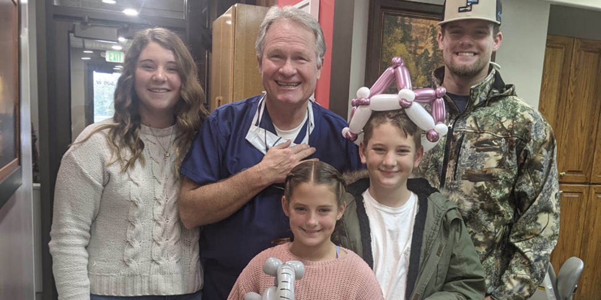

At our dental practice, we do everything we can to help create a safe and clean atmosphere for you and your child. We closely adhere to several recommended steps and protocols to ensure that the care we provide is as safe for you as possible. If you would like to learn more about our infection control methods here at Provo Pediatric Dentistry, we welcome you to contact us today. To set up an appointment for dental care in Provo, Utah, please give us a call at 801-373-4200 and ask for a visit with our pediatric dentists, Dr. Trace M. Lund, Dr. Kevin R. Markham or Dr. Bryce J. Bott!
At our office, we follow the extensive infection control recommendations outlined by the Occupational Safety and Health Administration (OSHA), the Environmental Protection Agency (EPA), and the Centers for Disease Control and Prevention (CDC). In fact, we go above and beyond many of these requirements because we are dedicated to protecting the health and safety of our patients, as well as that of our team.
Disinfectant hand soap
Gloves and face masks
Chemical disinfection of countertops and surfaces
Sterilization of all equipment before every use
In addition, our team of professionals sterilizes all reusable equipment after each use, including handpieces. We use an autoclave, which is a device that kills bacteria and viruses by steam, heat and pressure. When possible, we use disposable materials and tools to eliminate the risk of cross contamination through reuse.
Your health and comfort are our top priorities, and you can rest assured that we take all of the necessary steps to protect you and your family while you are with us. We welcome you to contact our office today to learn more about infection control and safety or schedule your next visit with our pediatric dentists. We look forward to caring for you!